eyesaved
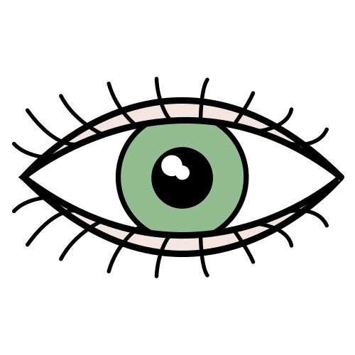

have an eye test, test the eyes

eye tracking, eyes tracking

lacking eye contact
earsaved
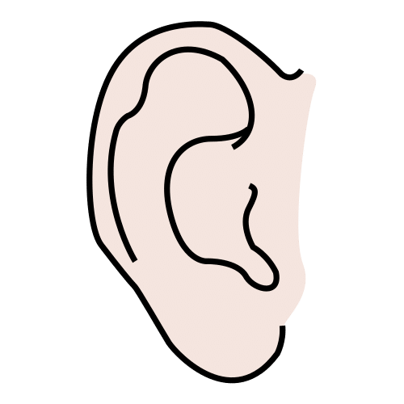

corncob, corncobs

ear, ears

ear, ears
nosesaved
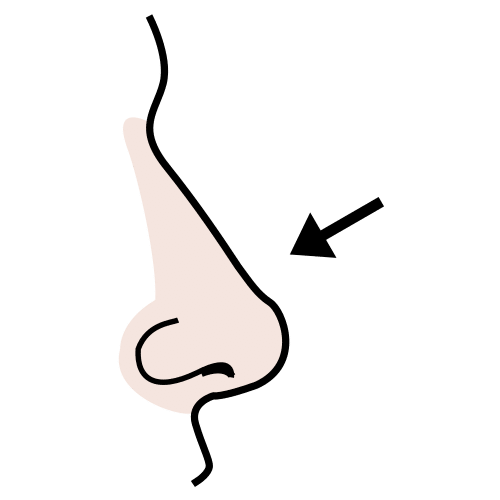

rummage in, rummage through

red nose, red noses

rummage in, rummage through
mouthsaved

mouth, mouths

rinse one's mouth, rinse

rinse, rinse out
tonguesaved
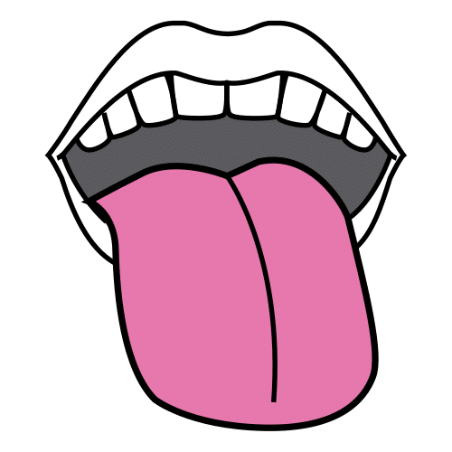

explore the throat, examine the throat

tongue drum, tongue drums
teethsaved
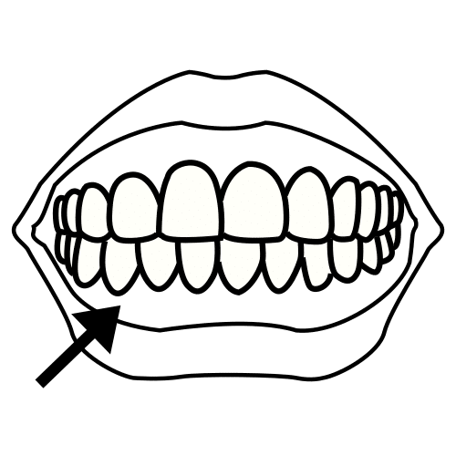

tooth, teeth

dinosaur teeth

brush teeth, brush the teeth
handsaved
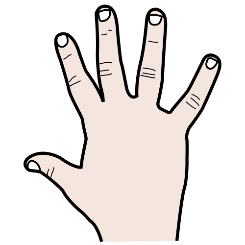

give, offer

sanitize, hygienise

handwash, hand-wash
legsaved
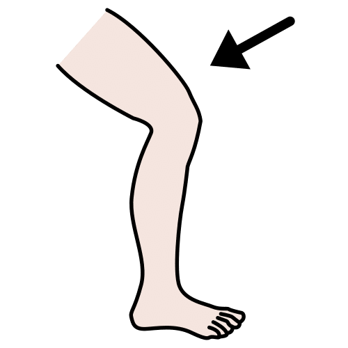

leg, legs

leg, legs

leg, legs
headsaved
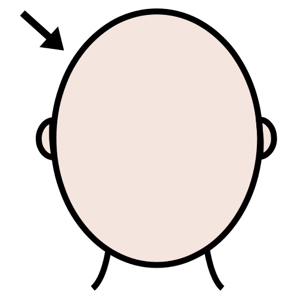

director, directors

administrator, administrators

head, responsibles
stomachsaved
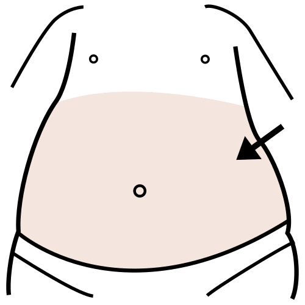

stomach, stomachs

stomach ache, stomach aches

stomach ache, stomach aches
seesaved
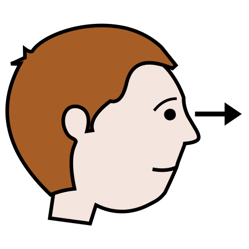

see, look

see, look

I don't see well, blurred
hearsaved
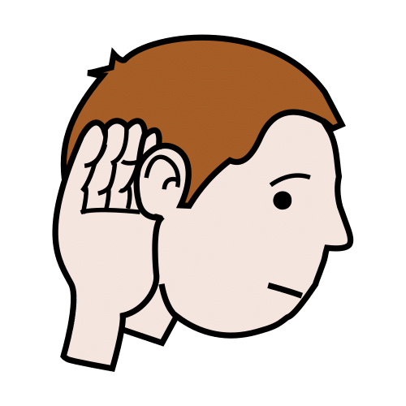

hear, listen

hear, listen

listen to music, hear music
smellsaved
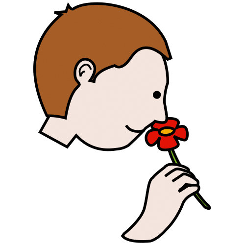

smell, sniff

smell

smell
tasteno_match
no image

spicy

acid

bitter
touchsaved
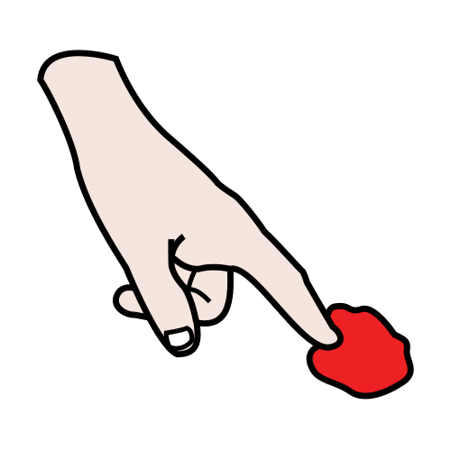

tap, taps

tap, taps

tap, taps
shirtsaved
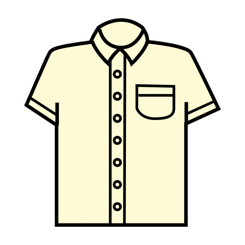

shirt, shirts

put on t-shirt

pull shirt collar, pull off shirt collar
pantssaved
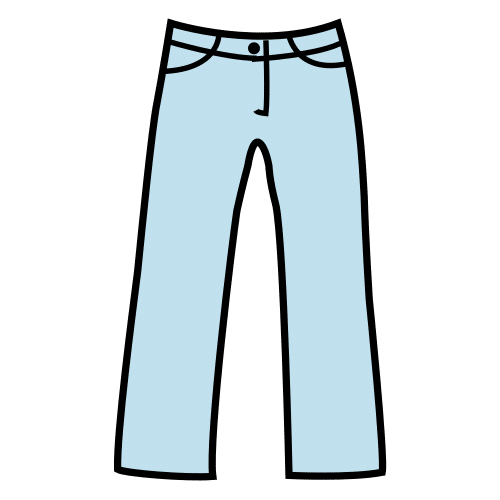

trousers, pants

trousers, short trousers

trousers, jeans
sockssaved
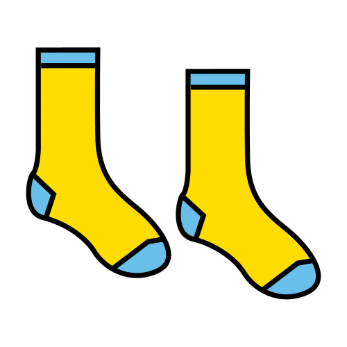

sock, socks
shoessaved
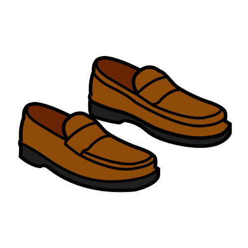

shoes, high-heeled shoes

shoes, footwear

shoe, shoes
jacketsaved
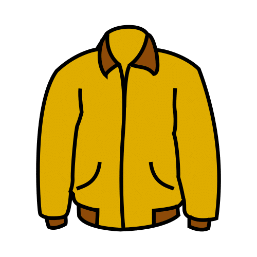

jacket, jackets

jacket, jackets

jacket, jackets
hatsaved
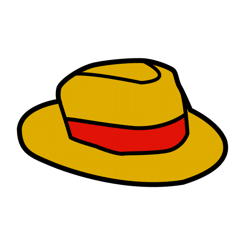

hat, hats

chullo, chullos

pastry chef hat, pastry chef hats
dresssaved
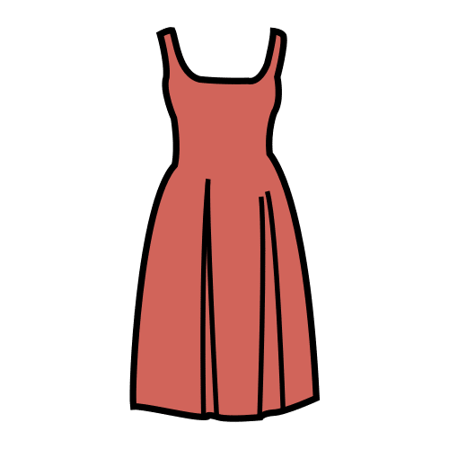

dress, get dressed

dress, get dressed

dress, get dressed
underwearsaved
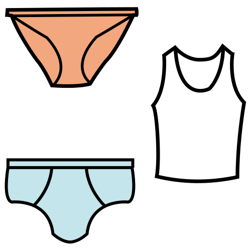

woman in underwear, women in underwear

man in underwear, men in underwear

man in underwear, men in underwear
injerano_match
no image
shirono_match
no image
beef_stewsaved
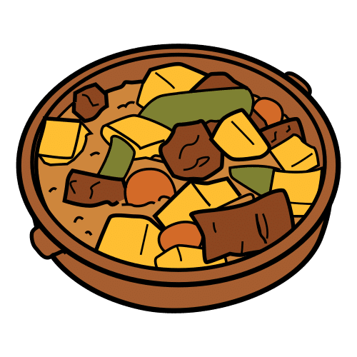

mixed vegetables, vegetable stew

fabada, fabadas

cook, stew
ricesaved
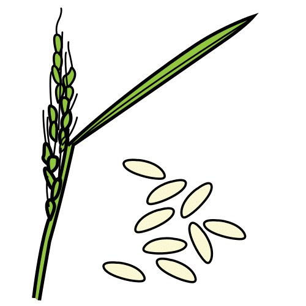

rice, rice packet

white rice, rice

puffed rice cake, puffed rice cakes
breadsaved
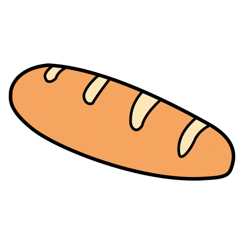

bread, breads

bread

bread
fishsaved
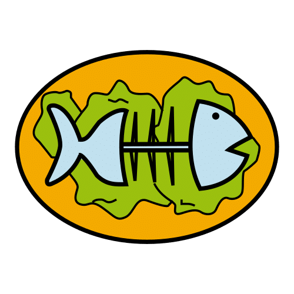

fish, fishes

fish, fishes

fish
fruitsaved
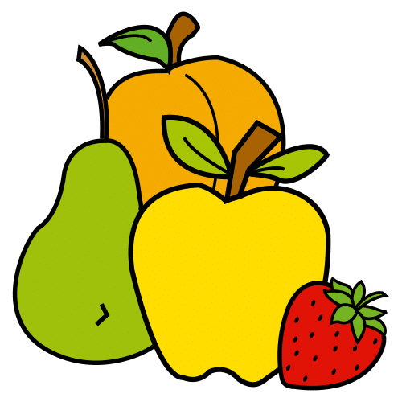

guava, guavas

wild plum, wild plums

chayote, chayotes
bananasaved


banana, bananas

banana, bananas

peel a banana
platesaved
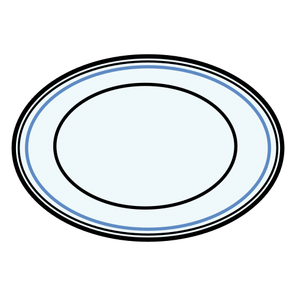

plate, plates

vestibular balance, vestibular balances

small plate, small plates
spoonsaved


spoon, spoonful

adapted spoon, adapted spoons

wooden spoon, wooden spoons
forksaved
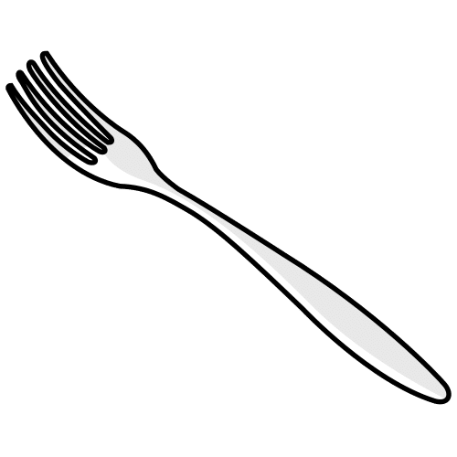

take the knife and fork, take the knife

tuning fork, tuning forks

take the fork
cupsaved
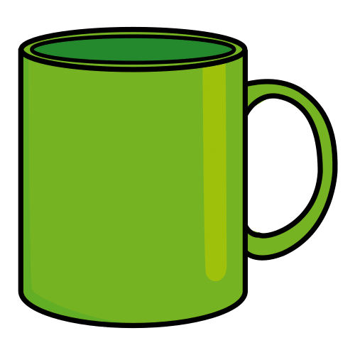

trophy, trophys

shaker, shakers

hot chocolate, hot chocolates
hungrysaved
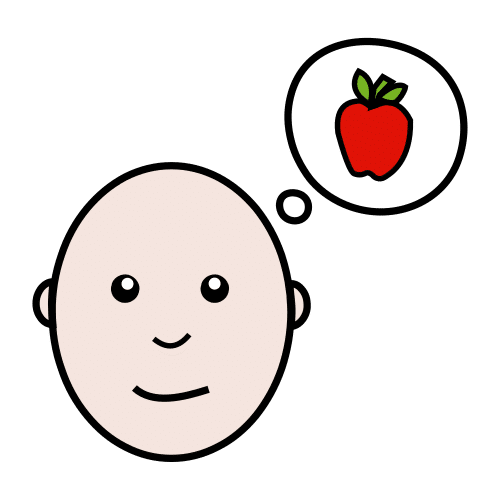

hungry

hungry

hungry
thirstysaved
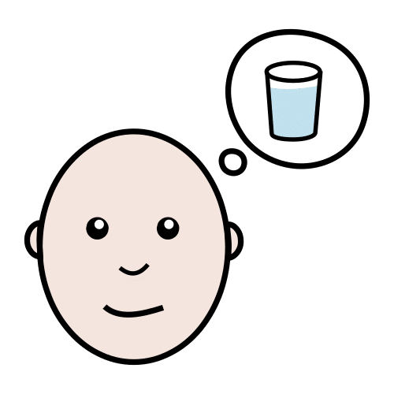

thirsty, be thirsty

thirsty

thirsty
tiredsaved

tired, fatigued

tired, exhausted

tired, exhausted
angrysaved

angry, annoyed

angry, irritated

angry, irritated
scaredsaved

frightened, scared

frightened, scared

frightened, fearful
swingsaved
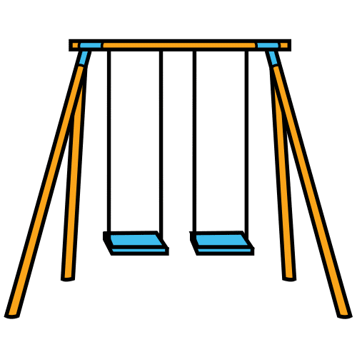

push, swing

push, swing

swing, swings
ballsaved

ball, balls

ping-pong ball, ping-pong balls

pass the ball
slidesaved
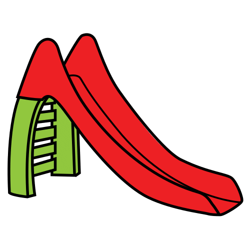

slide, glide

go down the slide, slide down

evacuation slide, evacuation slides